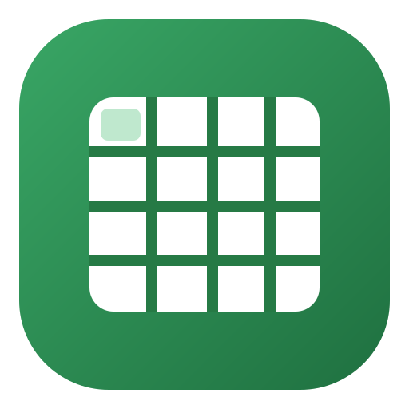

$
%
.00
.0
.0
.00
General
Number
Currency
Percent
Calibri
Arial
Times New Roman
Georgia
Verdana
Courier New
8
9
10
11
12
14
16
18
20
24
28
32
B
I
U
ab
Borders
Bottom border
Top border
Left border
Right border
Solid
Dashed
Dotted
Double
None
1
2
3
Align
Left
Center
Right
V Align
Top
Middle
Bottom
No wrap
Wrap
Rotation
Rotate -90°
Rotate -45°
Rotate 45°
Rotate 90°
A
Z
Z
A
Functions…
AutoSum
Average
Minimum
Maximum
Count
Multiply by…
Divide by…
Convert to %
fx
Functions…
SUM
AVERAGE
MIN
MAX
COUNT
Spreadsheets
Create a workbook or open an XLS/XLSX/CSV/TSV file locally.
New workbook
Open workbook
10%
25%
50%
75%
100%
125%
150%
200%
300%
400%
800%
Fit width
Opening workbook…
Workbook could not be opened
Close